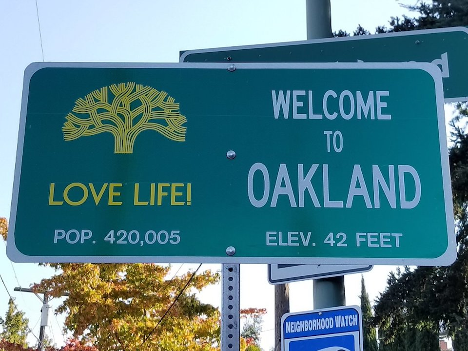
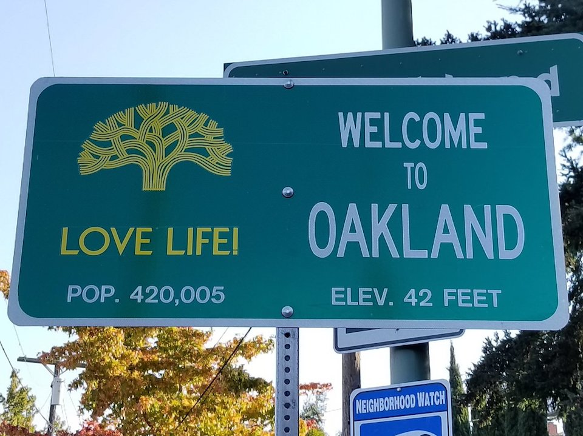

I grew up mostly in Oakland, but I have lived in other places like Richmond, CA and MEXICO for a few months. I enjoy watching and playing basketball and football. I like listen to a lot of music.I am interested in getting into the tech field hopefully with cyber security, hardware engineser, or as IT.
 

I have worked at Civicorps getting job training in landscaping. At Civicorps I have worked with different company like East Bay Mud, Cal Trans, East Bay Regional Parks, Alameda County Flood Control. Currently working at Tech Exchange doing Tech support, refurbishing laptops and desktop towers. Im also helping out with our EBAY, I help prepare pallets of sold iventory making sure it turns on and it has the correct specs installed.